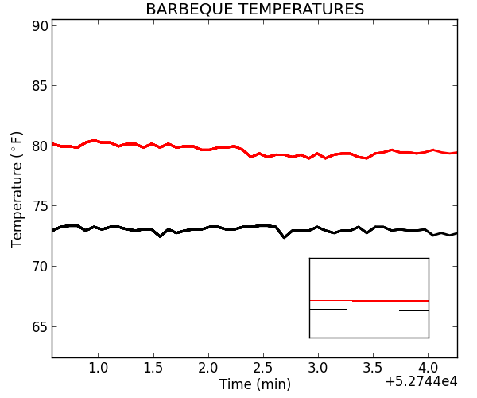

$def with (tempout)
<html>
<head>
<META HTTP-EQUIV="refresh" CONTENT="5">
<meta id="meta" name="viewport" content="width=device-width, initial-scale = .45" />
<title> Temperature Graph </title>
</head>
<body>

<p style="font-size: 250%;">BBQ = $tempout[0]F&deg &nbsp  Meat = $tempout[1]F&deg</p>
<br/>
<a href="settings" target="_blank">Further Settings</a>

</body>

</html>
